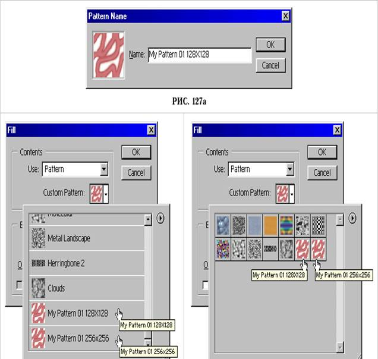

1. Бейненің керек емес элементтерін өшіру және жлғалған фрагменттерді қалпына келтіру.
2. Бейненің элементтерін «жамау» салу арқылы қалпына келтіру.
Бейненің керек емес элементтерін өшіру және жоғалған фрагменттерді қалпына келтіру. Фотосуреттерде және сканермен енгізілген бейнелерде әр түрлі техникалық ақаулар : дақтар, кірлеген жерлер өте жиі кездеседі. Бұл ақауларды міндетті түрде жасыру қажет. Сондай-ақ түсіру кезінде кадрға әр түрлі қажетсіз, суреттің әдемілігін құртатын заттар – трубалар, құбырлар, өткізгіштер, қоқыстар түсіп кететін жағдайлар болады. Осы ақауларды және бөгде объектілерді өшіру Adobe Photoshop – тың арнайы құралдарының көмегімен жүзеге асырылады : Clone Stamp Tool (S) – «Клондаушы штамп» құралы, Pattern Stamp Tool (S) – «Өрнекті штамп» құралы, Healing Brush Tool (J) – «Тірілтуші қылқалам» құралы, Patch Tool (J) – «Жамау» құралы.
Бейненің элементтерін «Клондаушы штамп» құралымен өшіру. Егер суреттегі дақ немесе зақымдалған сияқты ақауларды жасыру немесе бейнедегі бөгде заттарды өшіру керек болса Clone Stamp Tool (S) – «Клондаушы штамп» құралын қолданудан артығы жоқ. Ол ақаулы бөлікті дәл сол бейнедегі жақын жатқан аймақтардың фрагменттерімен білінбейтіндей етіп ауыстырады. Бұл құрал келесі үлгіде жұмыс жасайды. Алдымен клондалатын бейненің фрагментінен тышқанды шерту арқылы үлгі алынады. Сонан соң қылқаламның көмегімен алынған үлгідегі бейненің ақауы бар бөлігі боялады.
Бейненің элементтерін «Клондаушы штамп» құралымен қалпына келтіру. Фотосуреттегі ақаулар мен керексіз объектілерді өшіру мен жасырудан бөлек «Клондаушы штамп» құралымен бейненің жетіспейтін элементтерін қалпына келтіруге болады. Жұмысқа кіріспес бұрын қажетті объект ерекшеленеді, сонан соң құралдар панелінен «Клондаушы штамп» құралы таңдалады. Клондау үшін жұмсақ қылқалам пайдаланылады. Клондалатын объект үшін үлгі алынады және ұқсас түстер мен жақын жатқан бөліктерден қиындылар алынады. Тышқан көмегімен клондалатын облыстың центрі белгіленеді. әрі қарай тышқан көрсеткішімен үлгілер бейнеге көшіріліп, сурет қалпына келтіріледі. Егер суретті қалпына келтіруде қателік жіберілген болса, қайтару командасын беру арқылы түзутуге немесе қайта орындауға болады.
Бейненің элементтерін «жамау» салу арқылы қалпына келтіру. Жоғарыда айтылғандай бейне фрагменттерін қалпына келтіруді тек «Клондаушы штамп» құралымен ғана емес Patch Tool (J) – «Жамау» құралының көмегімен де орындауға болады. Клондаушы штампқа ұқсас бұл құрал да фотосуреттің көрсетілген фрагментін бейненің басқа жеріне көшіреді, бірақ ол мұны қылқаламмен емес, аймақты ерекшелеу және оны жаңа орынға көшіру жолымен жасайды. Яғни құралдың аты айтып тұрғандай мұнда негізінен бейнені жамау арқылы қалпына келтіреді. Зақымдалған немесе жетіспейтін бөлікті ұқсас объектілерден көшірілген жамауларды, фрагменттерді әкеліп орнату арқылы қалпына келтіруге болады. Бұл әдістің бір ерекшілігі – жамау ретінде тек суреттердің фрагменттері ғана емес, аймақты ерекшелегеннен кейін палитрадан таңдалатын өрнектерді де қолдану мүмкіндігі.
Stamp Tool (S) – «Өрнекті штамп» құралының көмегімен бейненің элементтерін өшіру.
